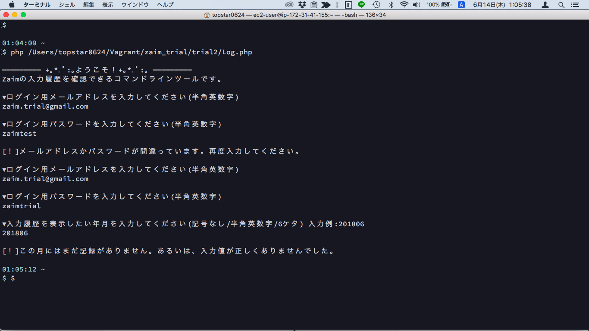
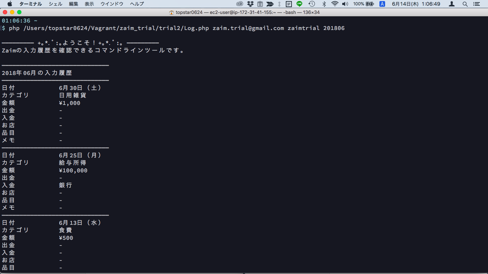
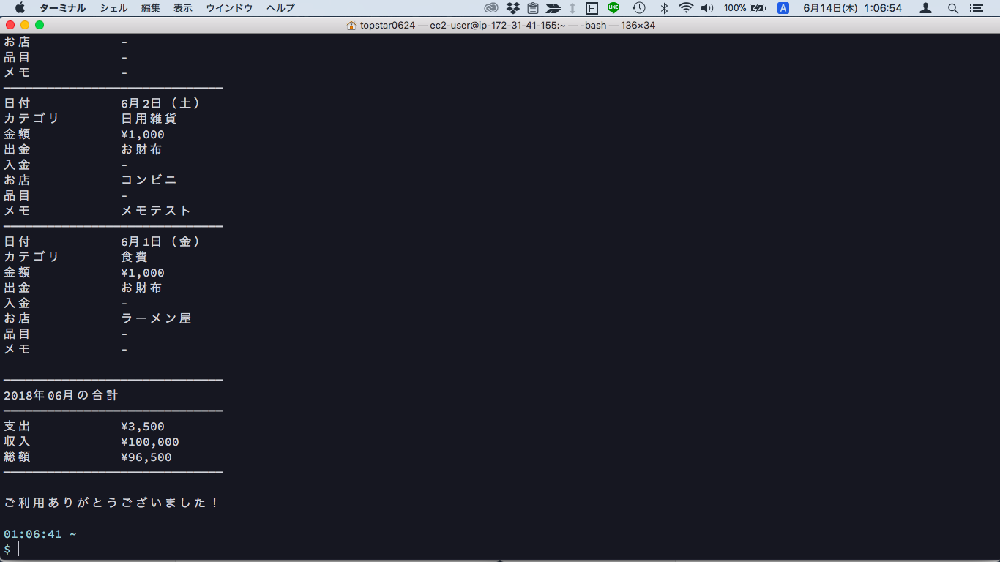

TRIAL2
開発内容
Web版Zaimをスクレイピングして、家計簿の入力履歴を表示するコマンドラインツール。
開発にかかった時間
2日間。約12時間。
工夫した点
1.対話型にしたこと。
コマンドラインで実行すると、メールアドレス/パスワード/表示したい月を質問されます。
引数で渡すことも可能です。引数が足りない分は質問されます。
アイパスが間違っていると再入力を求められます。
ブラウザで実行することも可能にしました。
ブラウザの場合は自分自身のテスト用アカウントの当月分を表示します。
2.できるだけ見やすくしたこと。
コマンドラインの限られた画面表示の中で、一覧表にすると非常に見づらかったです。
縦に項目を並べることで、ある程度文字数が長くなっても見やすさを担保できました。
動作確認方法の説明書
コマンドラインで対話型を利用する場合
$ php /path/to/Log.php

コマンドラインで引数を渡す場合
$ php /path/to/Log.php メールアドレス パスワード 表示したい月
コマンドの末尾に「メールアドレス パスワード 表示したい月」の順で引数を渡します。
全て半角英数、半角スペース区切り。月は201806のように記号なしの6ケタです。
例） php /path/to/Log.php zaim.trial@gmail.com zaimtrial 201805


ブラウザで実行する場合
ブラウザで実行できる環境にファイルを置いて実行する。